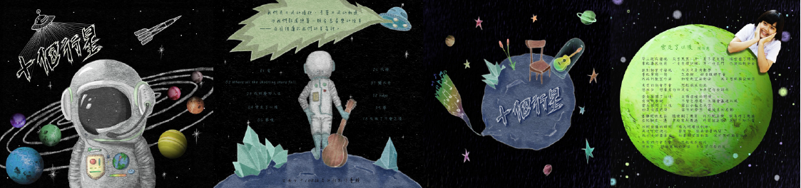

介面 / 海報設計

【YEF 國際青年創業領袖計畫】診所掛號平台
解決問題：
1. 診所端：現場掛號、電話掛號使診所櫃檯人員人一多容易手忙腳亂
2. 病患端：掛號到看診需等待很長的時間，無法預知何時會看診，查詢掛號進度不便
設計理念：
我希望設計一個掛號整合平台的 App，讓使用者可以快速在平台上找到符合需求診所，並提供使用者最關心的資訊，使其能夠快速下決定，減少看診前的麻煩及時間成本。
1. 可搜尋病名、掛號科別，系統會根據所在位置推薦最適診所
2. 搜尋結果以小視窗的方式顯示在地圖上，並提供重要資訊（醫師名稱、專業、評價）
3. 掛號頁面清楚顯示使用者的號碼、目前掛號進度
4. 提供看診的預估時間
【接案】政大國貿所法律組—招生說明會
我負責設計主視覺以及製作所有視覺產物，包括海報、傳單、手冊、FB Banner
設計理念：
我以「貿縱天下，法領群商」為主題作為主要發想的中心，這兩句話給我的感覺氣勢磅礴、卓越、領先、中國五言絕句感，因此我決定以馬的超群、奔騰的形象作為主視覺的規劃，並以群山的水墨畫形式呈現磅礴與中國的意象。
字體以中文書法風格為主體，作為與主視覺的搭配，並傳達正式、莊重的感覺。
【政大學生大使—設計長】2018 春季國際新生說明會
我擔任此活動的設計長，負責所有視覺規劃，製作所有文宣，如海報、議程表、活動時程表、資訊告示牌等。
設計理念：
由於政大在動物園旁邊，我希望以代表台灣的動物與自然環境結合的主視覺，歡迎外籍生的到來，因此我選擇玉山作為背景，以星空碎片代表政大清澈美麗的星空，並以幾何圖形代表萬事萬物、豐富的台灣生態、地形、文化，拼湊出台灣黑熊作為主視覺。
字型我採用高雅的書寫體作為標題，並用偏細且易於閱讀的字體延續細緻、舒服、高雅的感覺。
【政大學生大使—設計長】2017 國際生歡迎派對
我一樣擔任此活動的設計長，負責規劃所有視覺、實體場地佈置，並領導大家進行場地佈置的分工，海報、入場券、FB 頭貼、學校宣傳 Banner 等則由我獨立製作。
設計理念：
此次的歡迎派對主題為「雜貨店」，我希望呈現兒時鄉下雜貨店的溫馨、快樂、充滿驚喜與童趣的感覺，因此我採用活潑的暖色系，主題字與圖畫由我自己繪畫設計，希望呈現手寫、手繪的感覺，同時我也添加實際照片呈現物品的質感，提升主視覺的趣味性。
【政大音樂節—設計師】
左圖為活動原主題「是盡頭，還是起點？」的視覺設計，希望以花與小芽分別做為盡頭與起點，並以幾何交錯的長方形作為通道，代表通往現在或是過去。
右圖為政大音樂節的其中一個子活動，我以「兩個人的回聲」的主題作為出發，以傳聲筒作為主視覺，並以發亮效果呈現中間的線。線是聽到對方聲音的關鍵，若兩人沒有連結，才會只是兩個人的回聲。此活動提供人們一個聽到別人的吶喊的機會，我們即代表中間那條連起大家的線。
【政大音樂節—設計師】FlyingV 募資平台網頁設計
我以線條描繪出各活動的圖形，碎片代表吶喊中的人們，因為音樂，我們得以聚集，也得以成全、共同見證這些美好的旋律。
網站連結：https://www.flyingv.cc/projects/17556

【台南女中吉他社創作專輯】
這是我高中吉他社與朋友一起合資出的創作專輯，我負責製作專輯的視覺設計，包括封面、封底、歌詞頁封面。
設計理念：
這張專輯有十首歌，分別是社團中十位幹部所自己創作的歌曲，我們是十個行星，圍繞在稱作音樂的星系裡。太空人代表探索我們歌曲的任何人，他將會在星系中發現我們，踏入星球認識我們。
我特別在第三張圖的星球上，畫上玻璃罩著的吉他，模仿「小王子」星球上的玫瑰，代表音樂會是我們一生熱愛的東西。
FB 粉絲專頁：https://www.facebook.com/thetenplanets/
【台南女中紙膠帶設計大賽】銀獎
這是我在高中繪製的紙膠帶，當時得到第二名，150 捲在一天內銷售完畢。
設計理念：
我用繽紛的色彩傳達出在高中多彩多姿的生活，放入學校學生都相當有共鳴的東西，包括熱食部的「巧克力卡拉雞」、「阿姨的關東煮」、我們最愛的排球、萬用的學生證、裝飾用的制服及書包。